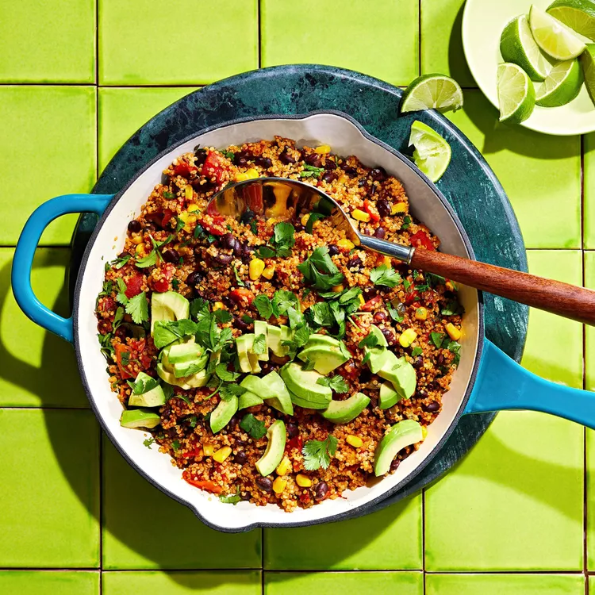

Mexican quinoa

This Mexican quinoa dish is one of those one-skillet recipes that's perfect for feeding a large family. And the kids love it! Serve it for Cinco de Mayo or any night of the week.
One pot, vegan, gluten-free and it gets done in 30 minutes or less! Perfect for those busy nights!
ingredients
-
1 tablespoon olive oil
-
1 medium jalapeño pepper, chopped
- 2 cloves garlic, chopped
- 1 (15 ounce) can black beans, rinsed and drained
- 1 (14.5 ounce) can fire-roasted diced tomatoes
- 1 cup yellow corn
- 1 cup quinoa
- 1 cup chicken broth
Steps
-
Heat oil in a large skillet over medium-high heat. Sauté jalapeño pepper and garlic in the hot oil until fragrant, about 1 minute.
-
Stir black beans, tomatoes, corn, quinoa, and chicken broth into the skillet. Season with pepper flakes, chili powder, cumin, salt, and black pepper; bring to a boil.
-
Cover the skillet with a lid, reduce heat to low, and simmer until quinoa is tender and liquid is mostly absorbed, about 20 minutes.
-
Add avocado, lime juice, and cilantro; stir until combined.